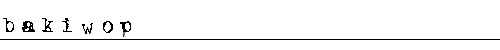

")



bakiwop is running on the Party ticket - the only political party for all Americans: liberal and conservative, young and old, rich and poor, short and tall, skinny and fat.
He was born in the Midwest in 1956. As a boy, he quickly discovered a dislike for chores which eventually led to a dislike for jobs, which has led him to a career in politics.
bakiwop would have fought in all of the wars he could have, only he has flat feet and asthma so no military branch would take him. He did, however, serve in the Boy Scouts of America with distinction and honor for over 10 years earning multiple merit badges as both a Cub Scout and a Boy Scout, eventually receiving the Order of the Arrow and National Eagle Scout honors. He is most proud of his 1st place victory in the Cub Scout Soap Box Derby Race of 1968.
bakiwop does not remember much that happened to him between the celebration of his Soap Box Derby Race win and 1987, but he finally decided to leave his parents house at the age of 31 and get into the import/export business - often flying single-engine airplanes from Tijuana, Mexico to unnamed airstrips outside of Las Vegas, NV. After 4 years running bakiwop Air he became fabulously wealthy and went on a giant bender.
After waking from his coma in 2006, bakiwop decided to only do soft drugs. Since making this life-changing decision, his thinking has become more lucid and he hardly ever sees little yellow men dancing inside of his beer cans anymore.
As you can see, bakiwop is a man who has "been there and done that", just like you. bakiwop is a man of the people and for the people. Just vote for the guy all ready.
- Vote often, vote bakiwop!
He was born in the Midwest in 1956. As a boy, he quickly discovered a dislike for chores which eventually led to a dislike for jobs, which has led him to a career in politics.
bakiwop would have fought in all of the wars he could have, only he has flat feet and asthma so no military branch would take him. He did, however, serve in the Boy Scouts of America with distinction and honor for over 10 years earning multiple merit badges as both a Cub Scout and a Boy Scout, eventually receiving the Order of the Arrow and National Eagle Scout honors. He is most proud of his 1st place victory in the Cub Scout Soap Box Derby Race of 1968.
bakiwop does not remember much that happened to him between the celebration of his Soap Box Derby Race win and 1987, but he finally decided to leave his parents house at the age of 31 and get into the import/export business - often flying single-engine airplanes from Tijuana, Mexico to unnamed airstrips outside of Las Vegas, NV. After 4 years running bakiwop Air he became fabulously wealthy and went on a giant bender.
After waking from his coma in 2006, bakiwop decided to only do soft drugs. Since making this life-changing decision, his thinking has become more lucid and he hardly ever sees little yellow men dancing inside of his beer cans anymore.
As you can see, bakiwop is a man who has "been there and done that", just like you. bakiwop is a man of the people and for the people. Just vote for the guy all ready.
- Vote often, vote bakiwop!